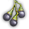

+
 Fruit of Perfection
1
🔗
+
How to Obtain
Farming (Breeding)
Arrow Mushroom
Bluffer Mushroom
Cloud Mushroom
Fog Mushroom
Gathering
Wild Herb (Behr)
+
Used In Recipe
🔗
[Guild] Old Moon Magic Neutralizer
And More...